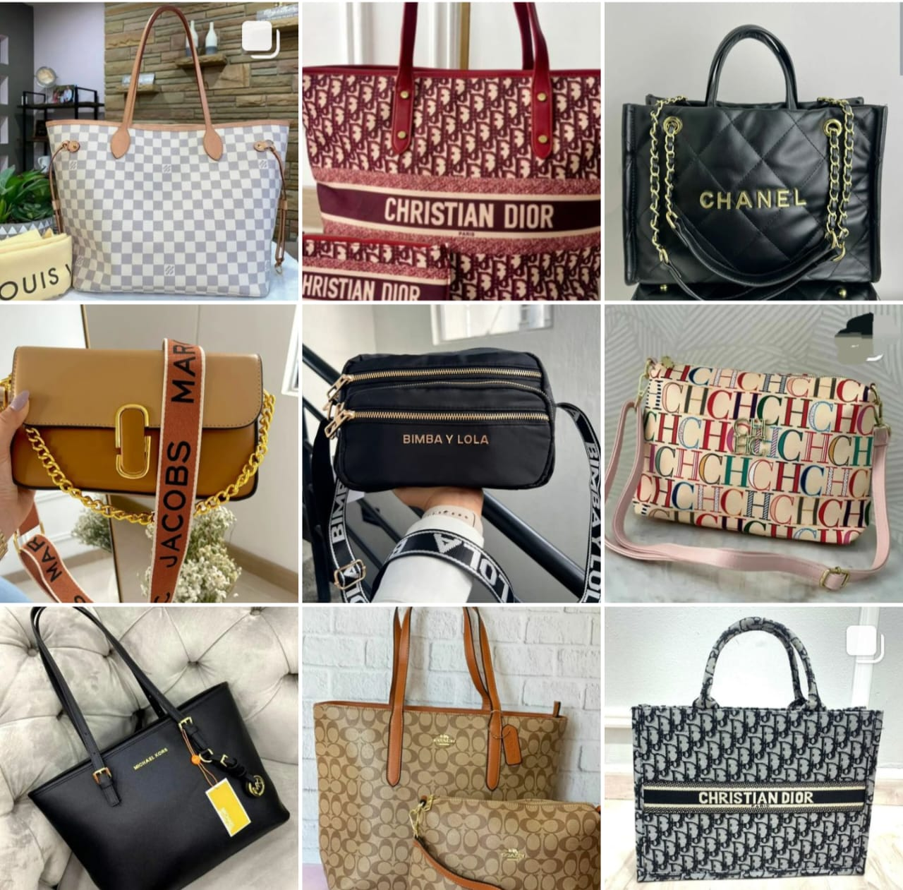
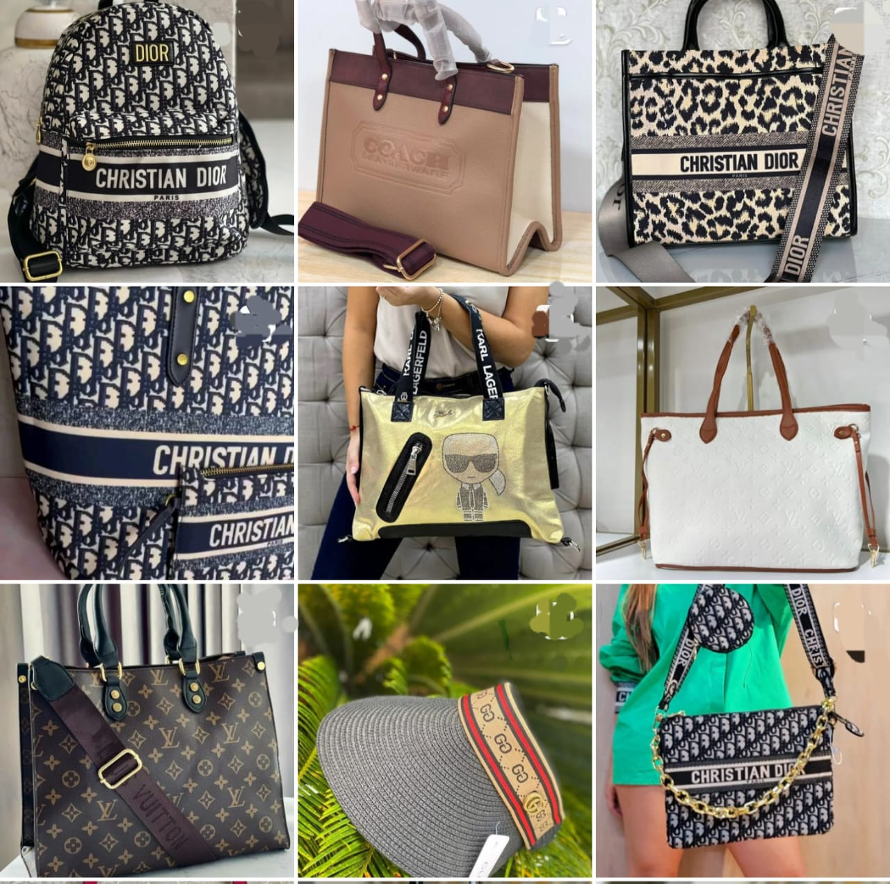
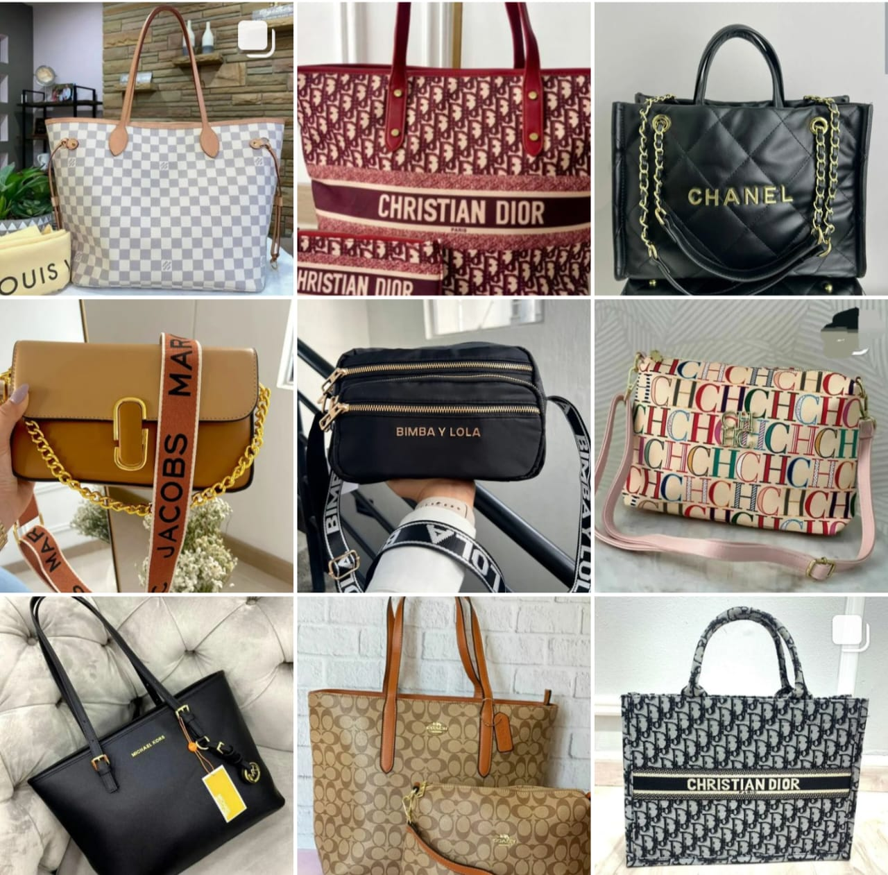
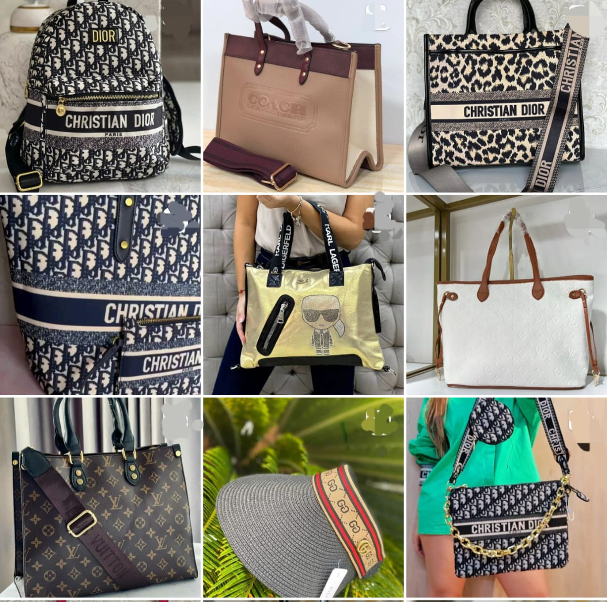

Desde mis primeros recuerdos hasta el presente, mi vida ha sido un viaje de descubrimiento, crecimiento y transformación. Cada experiencia, cada encuentro y cada desafío han dejado una huella indeleble en mi camino. En esta página, te invito a adentrarte en los capítulos de mi vida, donde compartiré las alegrías, los logros y lecciones que me han moldeado hasta convertirme en la persona que soy hoy. A lo largo de los años, he enfrentado desafíos que me han llevado a descubrir mí fortaleza interior y a valorar las relaciones humanas que han dado forma a mí vida.
Mí vida en palabras: un relato auténtico
menu_book
star

Quién soy?
Mí nombre es Deisy Esther Esquivia Peréz , tengo 36 años, nací en el seno de una familia catolica y muy unida vivo en Ciénaga de Oro Cordoba un municipio que queda a 40 minutos de Montería donde se celebra en Semana Santa unas de las procesiones mas hermosas a nivel nacional, este año el ministerio de cultura declaró oficialmente como patrimonio cultural. tengo un hijo de 8 años se nombre es Joseph ELias mi motor de vida, es el impulso a seguir adelante, no puedo dejar de mencionar a mi hija perruna "Luna""Luna" mi amor por los animales me hace quererla como una hija más.


Cualidades y Defectos
Es importante reconocer que todos tenemos una combinación de ambos, y que es normal. Las cualidades nos hacen especiales y únicos, por eso es importante valorarlas en nosotros mismos y en los demás. Al mismo tiempo, los defectos nos brindan la oportunidad de crecer y mejorar, siempre y cuando estemos abiertos a trabajar en ellos. Es importante recordar que nadie es perfecto, y que todos estamos en un constante proceso de aprendizaje y desarrollo.
Cualidades
- Amorosa
- Sencilla
- Colaboradora
- Humilde
Defectos
- Impaciente
- Acelerada
- Timida
Estudios
- Técnica profesional en soporte de sístemas en informática
- Estudio Ingenería de Sístemas
- Desarrollo Web Full Stack
Que me hace feliz
Entre muchas cosas resalto hacer ejercicio ya que es fundamental para mi bienestar físico y mental, apreciar la naturaleza, soy amante de las flores su bella y colores demuestran la perfección de DIOS, y hablando de su perfección me apasiona ver la luna "soy selenofilica" tomarle fotos, ver su luz y sus fases me transmiten una sensación de serenidad sin duda es una belleza natural, montar a caballo lo disfruto en mis tiempos libres pasión que me enseño mi hijo, lo que más me apasiona y me hace felíz es compartir con mi familia sobre todo el motor de mi vida, mi hijo verlo feliz es reconforma y me hace luchar por mis sueños para brindarle un mejor futuro.
A que me dedicó
Me dedicó a estudiar y atender mi emprendimiento que surgió hace cuatro años a raíz de la pandemia una tienda virtal de bolsos "BOLSOS JEZE" donde ofrezco replicas de marcas, con diseños diferentes, para gustos multiples.
| Marcas | Estilos | Material |
|---|---|---|
| Prada | Amplios | cuero Sintético |
| Gucci | Medianos | Cuero PU |
| Louis Vuitton | Manos libres | Material Impermeable |
| Michael kors | Canguros | Lona |
| Christian Dior | carteras | yute |
 


